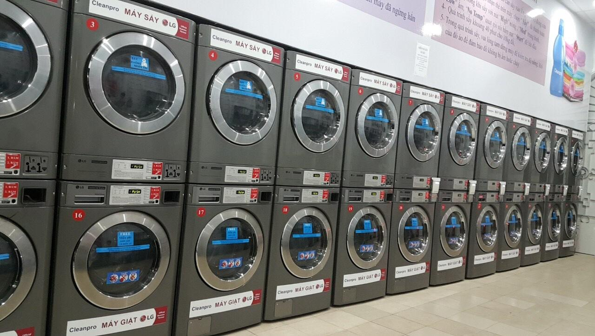

Về Chúng Tôi - WASHUP
Giải pháp kết nối dịch vụ giặt ủi trực tuyến nhanh chóng, tiện lợi cho sinh viên & người bận rộn
Câu chuyện thương hiệu
WASHUP được hình thành từ một vấn đề quen thuộc với sinh viên, người đi làm và những gia đình bận rộn: việc tìm một tiệm giặt phù hợp đôi khi mất nhiều thời gian hơn mong đợi. Thông tin về dịch vụ, giá cả và khu vực phục vụ thường nằm rải rác ở nhiều kênh, khiến khách hàng khó tham khảo và so sánh trước khi lựa chọn.
Từ thực tế đó, nhóm phát triển WASHUP như một nền tảng thương mại điện tử trung gian kết nối khách hàng với nhiều tiệm giặt ủi địa phương. Người dùng có thể khám phá các tiệm và tham khảo dịch vụ trên cùng một website. Trong các giai đoạn tiếp theo, WASHUP hướng đến hỗ trợ đặt dịch vụ và theo dõi đơn hàng trực tuyến.

Tại sao nên lựa chọn WASHUP?
Minh bạch & Dễ so sánh
WASHUP hướng đến tập hợp thông tin dịch vụ, mức giá và tiệm cung cấp tại một nơi, giúp khách hàng thuận tiện tham khảo và so sánh.
Tiết kiệm thời gian
Người dùng có thể khám phá các dịch vụ và tìm hiểu tiệm giặt trên cùng một giao diện, thay vì tìm kiếm thông tin từ nhiều nguồn riêng lẻ.
Minh bạch tình trạng đồ
Trong định hướng phát triển, WASHUP dự kiến hỗ trợ ghi nhận tình trạng quần áo để khách hàng và tiệm giặt thuận tiện đối chiếu.
Hỗ trợ tiệm giặt địa phương
WASHUP hướng đến tạo thêm kênh giới thiệu dịch vụ cho các tiệm giặt địa phương, giúp họ có cơ hội tiếp cận khách hàng trên nền tảng số.
WASHUP – Dự án học phần
Học phần: Phát triển ứng dụng Web/Thương mại điện tử
Giảng viên hướng dẫn: TS. Nguyễn Mạnh Tuấn
Đơn vị thực hiện: Nhóm 6 – Đại học Kinh tế TP. Hồ Chí Minh (UEH)
Phiên bản hiện tại: Giao diện minh họa bằng HTML5 và CSS3. Chưa triển khai đặt dịch vụ hoặc thanh toán trực tuyến.